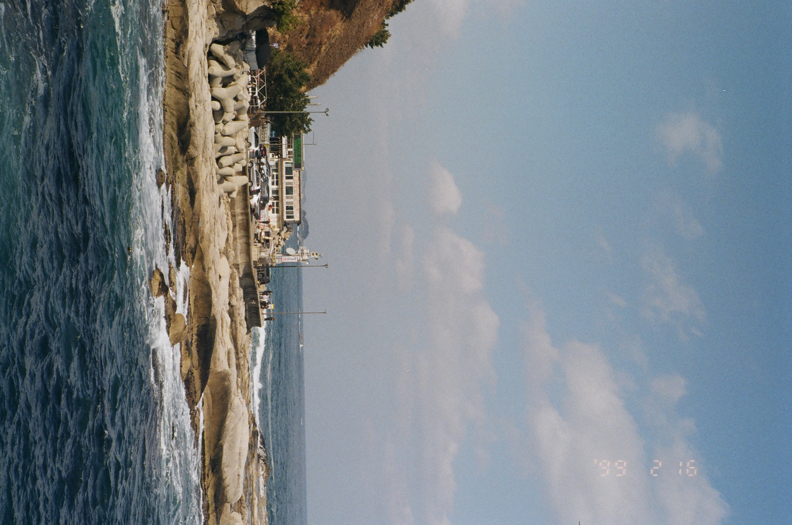
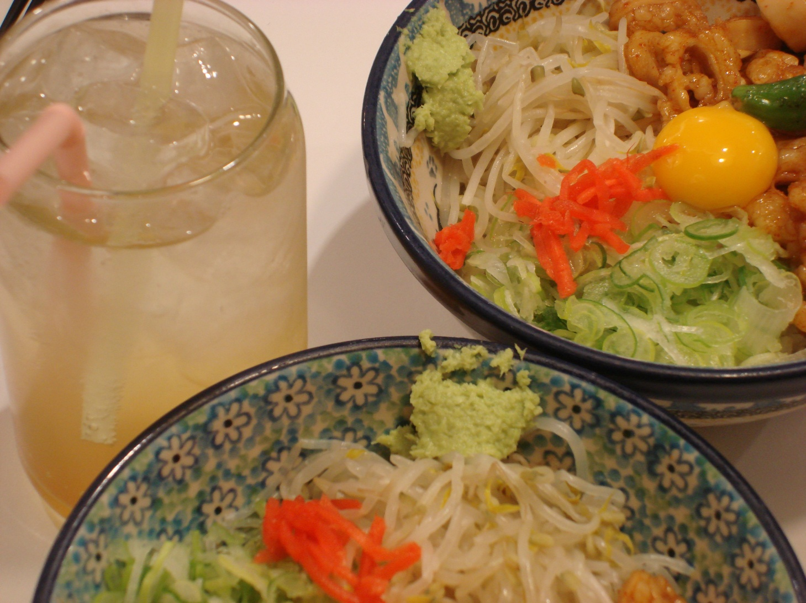
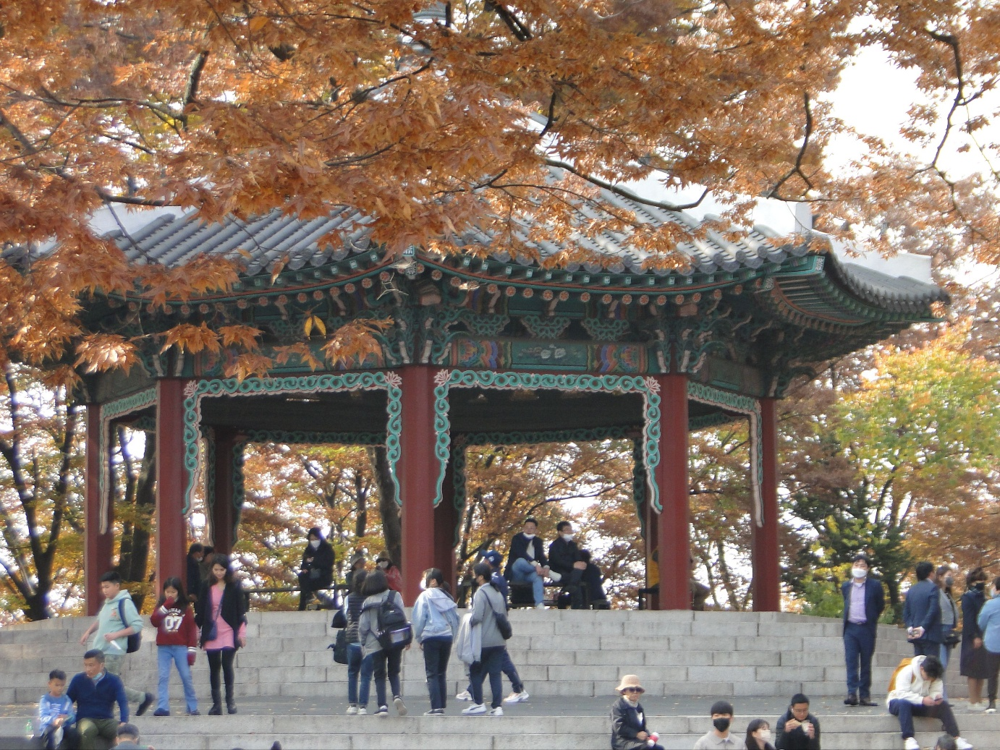
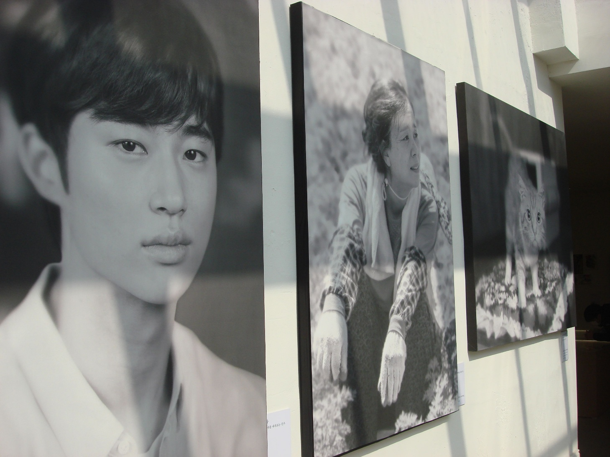

새로운 시도를 할 때 사람들은 종종 결과가 별로 좋지 않을까 봐 도전을 망설이곤 합니다. 저 역시 이왕 시간과 노력, 돈, 정성 등을 쏟아야 한다면 결과까지 좋았으면 하는 마음인데요. 그래서 과정까지 즐길 수 있는 일로는 무엇이 있을지 찾아보기로 했습니다. 그렇게 탄생한 취미는 다름 아닌 ‘카메라로 사진 찍기’입니다.
요즘은 스마트폰의 기능이 매우 좋아져 대다수의 사람들이 휴대폰으로 사진을 촬영합니다. 스마트폰으로 사진을 찍는 건 유용하고 편리하지만 어느 순간 사진을 찍는 행위가 특별하게 느껴지지 않는 것은 기분 탓일까요. 그래서 돌고 돌아 감성을 찾을 수 있는 ‘필름 카메라’에 입문하게 되었습니다. 필름 카메라가 매력적으로 다가왔던 가장 큰 이유는 노이즈와 색감 때문인데요. 열심히 찾아본 후 중고가 8만 원으로 구매한 필름 카메라는 'Pentax Zoom 280p'이었습니다. 카메라를 사고 나니 그 순간을 장면으로 남기고 싶은 순간이 늘어나 하루 일과가 굉장히 알차졌죠.
작심삼일과 굉장히 가까운 사람임에도 불구하고 꾸준히 사진을 찍었죠. 하지만 예상치 못한 장애물이 생기고 맙니다. 바로 전쟁으로 인해 필름값이 지나치게 상승한 것인데요. 이전의 필름 가격을 알기에 더더욱 필름 카메라로 계속 사진을 찍는 건 조금 배가 아팠습니다. 하지만 하늘이 무너져도 솟아날 구멍은 있는 법, 정말 고맙게도 뉴진스가 Ditto로 캠코더, 디지털 카메라의 붐을 몰고 옵니다.
운이 좋게 이미 집에는 4~5개의 디지털 카메라가 있어서 활용하기도 좋았죠. 직접 사진을 현상하러 갈 필요가 없어 편리했고 자글한 감성은 사라졌지만 화질이 좋다는 장점이 컸습니다. 필름이든 디지털이든 카메라로 찍은 사진은 시간이 지나도 볼 수 있어서 좋았습니다. 기억은 좀 흐려져도 그때 어디에 갔고 무엇을 봤고 왜 즐거웠는지 추억할 수 있었죠. 최근 몇 년 간 시간이 빠르게 흐르고 일상이 바빠서 순간의 기쁨을 놓치는 날이 많았는데요. 그런 아쉬움을 달래줄 창구가 되어 제겐 충분히 의미 있는 시도였다고 자신 있게 말할 수 있습니다.
사실, 새로운 재능을 찾은 느낌이 들기도 합니다. 찍히기보다 찍어주는 것을 선호하다 보니 피사체가 어떤 모습일 때 매력이 극대화되는지 인지하는 실력이 늘기도 했고요. 사물, 사람, 풍경 모두 저마다의 자연스러운 매력을 풍길 때 그 장면을 예쁘게 잘 담아냈다는 자부심도 있고요. 사진이라는 결과물을 눈으로 직접 볼 수 있어 성취감도 즐길 수 있고 잘 찍었다는 칭찬에 기분이 좋기도 합니다. 기본적으로 사진을 좋아하고 자연스러운 예쁨을 추구하는 이들이라면 한번쯤 사진 찍는 취미를 가져보는 걸 추천하고 싶네요.
(Tmi : 메뉴바를 누르면 등장하는 Photos도 제가 찍은 사진이랍니다)